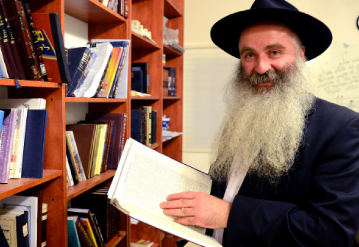

Reaching out to Russian Jews in Rishon
There are no statistics on the number of Russian immigrants to Eretz Yisroel who have become baalei t’shuva, but one of the people responsible for the Jewish-Chassidic revolution is R’ Ovadia Leibman of Rishon L’Tziyon. * Ovadia attended a spy school in the Soviet Union and completed a degree in electronic engineering and communication. He began searching for G-d and ultimately found Him in Judaism. * Today, he is the shliach for Russian speakers in Rishon L’Tziyon.

The Chabad House for Russian speakers in Rishon L’Tziyon just held a farbrengen in conjunction with a festive siyum on the entire book of T’hillim. An intellectual and serious group of men, from several different countries of the former Soviet Union, took part. Most of them have impressive professions such as medicine and engineering. This is the fifth year that they have been gathering every week at the Chabad House with the shliach, R’ Ovadia (Vadim) Leibman, and learning T’hillim in depth with many commentaries.
“We put in a lot of work to cover many commentaries on the sections of t’filla that come from T’hillim,” says R’ Ovadia. “We collected explanations from Rishonim and Acharonim as well as from Sifrei Chassidus and sichos of the Rebbe. We learned them together with people who, by nature, love deep learning. Now, after five years of intensive learning, we are done.”
This shiur is not the only shiur given in the Chabad House. There are shiurim on nearly all aspects of Torah, given daily. Dozens of people wouldn’t miss a single shiur. In a spacious, two story building located in the center of Rishon L’Tziyon, R’ Ovadia Leibman works to spread the wellsprings to hundreds of thousands of Russian Jews who live in the fifth largest city in Eretz Yisroel.
There are also classes for women and programs for youth, the generation of the future.
All these activities began twelve years ago when R’ Leibman, an engineer by profession and a respected person within the Russian-speaking community, had to explain to his friends in academia why he was changing his lifestyle and becoming a religious Jew.
It began with a shiur with one person and a friend brought a friend, one family brought another, until it became necessary to find a place for all the programs. “Over the years, many Jews also changed their way of life from one extreme to another, and today are religiously observant. They wear a hat and sirtuk and look like longtime Chassidim.”
ANTI-SEMITISM
R’ Ovadia Leibman was born in Moscow on Erev Sukkos 5719/1958.
“My mother was a professor of medicine and my father was the chief engineer for the Russian Scud missiles. Long before this missile became famous during the Gulf War, we at home were familiar with the missile and its capabilities. Parts of the engine were around the house and we used appropriate parts as drinking cups or as game pieces. We had no Jewish education; the only thing we knew is that we are Jews, nothing more.”
Vadim went to an elite school whose purpose was to train spies to spy on western countries, particularly the United States.
“We learned English on a very high level and were trained to think like Americans. There were no more than thirty students in a class. In my class we had twenty-eight students. When I was older, I realized that sixteen of us were Jews. Today I know for a fact that we were twenty-six Jews. As for the remaining two, I don’t know. They may also have been Jewish. Most of the students now work in government institutions in Moscow and I am in touch with some of them.”
In this school there was no hatred toward Jews and Judaism, but when it came time to apply to university, anti-Semitism reared its ugly head.
“At first I considered studying physics. Despite my high marks and the warm recommendations that I got from the school, I soon realized that my Jewish identity would not enable me to achieve this goal. I abandoned this dream and switched to electronic engineering and communication.
“Before I started university, I was disturbed by feelings of inner seeking, and in university this feeling intensified. I felt emptiness. The communist philosophy places man in the center and I felt there had to be Someone who created this world that we enjoy. The world could not have been created of itself just like a slice of bread cannot be created of itself. I even went to a Christian church where I hoped to find answers to my questions. I quickly realized that the priest was more confused than I was and his answers were superficial at best.
“I stopped visiting the church but did not even consider exploring Judaism, because in Russia of those days there was no Judaism. It was only after the communist regime collapsed that my parents told me that my grandmother who lived with us was Shabbos observant and lit candles every Erev Shabbos. She kept kashrus and other mitzvos. For many years she did this secretly and even hid her religious observance from us, her grandchildren, since she was afraid we would tell our classmates inadvertently.”
“Before Yom Kippur 5738, a group of Jewish students arranged to visit the big shul. The one who arranged this was the grandson of the chief rabbi of Moscow in those days, who went to university with us. We heard that this day is a special one on the Jewish calendar but we knew nothing about its significance. We arranged to go early in the morning. We packed sandwiches and drinks and got into cars. At the shul, we only dared to take a peek inside while we stood outside the entire time and schmoozed.
“People heard about our outing, and this was just the excuse a group of gentile students needed; they were always looking for ways to kick me out of my job. Half a year later, a Jewish student made aliya under the uniting families clause. She maintained that she was going to help her sick grandmother. The reaction of all the students was that this was treason, because Russia supported the Arabs; with her going that was one more soldier from Russia going over to the Zionist army which was fighting against the interests of Mother Russia. That group called a meeting of the school communist cell and asked me in my position as a leader in the communist movement in university to denigrate the girl. I wasn’t willing to do so, arguing that her reason for going was humanitarian. This aroused the ire of the group and I was pushed out.
“But Russia being Russia, a few days later I was appointed once again as chairman of the movement. Nice bribes were placed in the pockets of the right people who saw to my appointment.”
FOUR APARTMENTS – FOUR SHULS
When Vadim successfully completed his studies, he married a Jewish girl named Larissa who worked for her father in his eye clinic.
“My father-in-law was in charge of ophthalmology for the entire Soviet Union and served as the personal doctor of senior government officials. After we married I also worked in the family clinic. Our material life was very good. While the average Russian was pursuing bread, we exchanged our cars every two years and bought whatever we liked.”
But it was when he had material things in abundance that young Leibman began feeling that same emptiness again.
“I knew that I am a Jew and I was upset that I knew nothing about this. Near our house was the main shul of Moscow. I once got up the nerve to peek inside, but I immediately ran out. There were a few old men and each was busy with his own business.
“After that, we moved four times. Each time, we found ourselves facing a shul. It was most remarkable. In our third apartment, we were facing the Bolshoi Brunoi shul and in the fourth apartment it was the Marina Roscha. Moscow of those days did not have many shuls and I felt that this was G-d’s way of hinting something to me. We lived a great paradox. My soul was greatly drawn toward learning about my Judaism, but I did not know how to go about this. In the meantime, I continued enjoying my comfortable life.”
The one who ran the Marina Roscha shul in those days was R’ Dovid Karpov, a Chabad Chassid.
“One day, I decided to get up my courage and go into the shul. R’ Karpov noticed me right away and invited me in with a friendly smile. He knew how to make me feel comfortable and I had a long talk with him. I began visiting the shul more often until I became a regular at the minyanim. I sent our oldest son, Lev, to R’ Karpov for him to teach him Torah on Sundays.
“One day, R’ Karpov handed me a personal letter from the Rebbe, inviting me to take part in the Lag B’Omer parade. He explained the importance of it to me. I am embarrassed to say that my first thought was, who was this old man in New York to tell me what to do? But what happened was that the entire family participated in this parade that took place outside the city. All around walked dozens of KGB secret agents.”
The young Leibman family lived two houses away from the Premier of the Soviet Union; the security on the street was very high.
“Thanks to them, we could leave our car open at night without worrying about thieves, but as the years went by, the situation in the country deteriorated. Thieves were bold enough to do as they pleased until one day we found our car broken into opposite the Premier’s house. That day we realized that if we weren’t secure here, we had no reason to be in Russia anymore. We decided to make aliya.”
Leibman was getting more involved in Jewish life. What strengthened his belief in a Creator was an amazing story that happened with his son.
“Our son attended an elite school in Moscow that was located near our house. The grandchildren of Premier Brezhnev attended the same school, as did the grandchildren of the mayor of Moscow, Promyslov. It was the only school that had a swimming pool in its yard. One day, when our son came home and began scratching all over, we suspected it was because of the pool and we hoped the problem would go away. When it didn’t, we sent him for blood tests which showed that his sugar level was high and he was suspected of having diabetes.
“This was shocking news and we were afraid of how his life would turn out with this grave illness. Before we took him for a more serious blood test, I prayed to G-d and promised that if the result would be good, I would no longer eat pork. I knew that this was a major prohibition in the Torah.
“We tensely waited for the results which astounded everyone and showed normal sugar levels. It seemed that, strangely, the previous blood test was in error. This story bowled me over. I felt that Hashem was involved and this strengthened me very much.”
When the gates to the Soviet Union opened in 5750, the Leibman family took advantage. Their property, which included two homes, two cars, and many possessions, were divided among relatives and friends.
“We were welcomed in Eretz Yisroel by relatives who lived in Beer Yaakov. Shortly after our arrival I found work in my profession. My wife passed the Health Ministry’s test for ophthalmology and opened a private clinic in Ashdod which operates till this day.”
Two years later, Leibman’s father died and he returned to Moscow to mourn for him.
“I stayed with my sister whose house was facing the Marina Roscha shul. On Sunday, I went there to daven and say Kaddish, but on Monday the shul was gone. A fire had burned down the shul that night. Nearby stood the rabbi, R’ Berel Lazar, saddened and wondering what to do next. We got into a conversation, and since then I became close with the shluchim there and learned a lot from them. My brief stay in Moscow and the passing of my father were a source of great spiritual arousal for me.”
R’ Leibman returned to Eretz Yisroel wearing a yarmulke. A few days later, as he walked down the street of Rishon L’Tziyon, the shliach R’ Yitzchok Gruzman went over to him and brought him into the Chabad House to complete the minyan.
“That was our first encounter and we became good friends. I became a regular participant at all the shiurim and activities at the Chabad House.”
The Leibmans had a second son and his bris took place during the first Kinus Geula and Moshiach that took place after Gimmel Tammuz, with the participation of thousands of people. He was named Yosef.
A few months later, Ovadia decided to become Shabbos observant. Then came a beard and later, on his father’s yahrtzait, when he went to daven for the amud, he was told it is customary to wear a jacket. Shortly thereafter, he bought a sirtuk in Kfar Chabad.
GROWING OUTREACH
Once R’ Leibman became a Chassid, he appreciated shlichus more than ever and began giving shiurim to Russian speaking Jews who were seeking the truth. At first, these shiurim took place in the main Chabad House of Rishon L’Tziyon, until it became necessary to find his own place.
“I consulted with R’ Gruzman, and he is the one who found us the place we are in today.”
He began with five people and within a short time there were several dozen. They were Jews of all ages who came to shiurim. Each one had a fascinating life story. If you were to ask R’ Leibman, he would tell you he is not at all satisfied. Dozens of people changed their lives, but that is a minuscule amount when you consider the hundred thousand Russian speaking Jews living in Rishon L’Tziyon.
“We have two kinds of shiurim. There are in depth classes that are attended by people who want to learn and know. Generally, they are more intellectual. And there are more experiential classes for those who looking for the emotion and the light in Torah.”
In addition to the ongoing shiurim, the Chabad House has a smicha program which is run by his son Lev. He just recently passed the tests to become eligible to serve as rabbi of a city. Students of the program have already taken the first test and are moving on to other parts of study. R’ Leibman’s shiurim are popular even among those who live far from Rishon L’Tziyon and even among non-Jews.
“We started recording all the classes and putting them up on a special Internet site. Recently, someone asked me deep questions on my shiurim on T’hillim. I was amazed by his questions and asked him whether he is Jewish. When he said no, I asked him to check whether he had Jewish roots, but he surprised me when he said he is a distinguished priest in an eminent church. He is a member of a group of priests who share my classes amongst themselves and listen to them regularly.”
R’ Leibman has become a Torah and spiritual authority and many Jews from the former Soviet Union go to him to share what’s on their minds and to ask him for advice. R’ Leibman has many stories but he chooses his words carefully.
“One day, a middle aged person came into the Chabad House and said that his daughter had begun having frightening dreams in which she saw fish tearing her to pieces. She was terrified, cried a lot, and found it hard to fall asleep. He was at a loss as to what to do.
“I questioned him about his life and discovered that he had recently had himself baptized as a Christian. He told me that when he went to a shul, nobody paid any attention to him. When he went to a church, he was given great honor. I explained to him that the Christian books he had brought home were the source of his daughter’s fear, but he found it hard to accept that. We had a lively discussion.
“The information about Christianity that I had learned in my younger years came in handy. I was able to easily demolish all the nonsense they had told him. He was taken aback by my knowledge.
“I asked him to commit to putting on t’fillin and we arranged to learn Tanya together. A while later he dropped Christianity, his daughter put a cup and bowl for negel vasser near her bed and began saying the bedtime Shma, and her nightmares stopped.”
THE SECRET IN THE MOTHER’S FILE
In twelve years of shlichus he has been mekarev numerous Jews to Torah and mitzvos. Many of them have become Lubavitcher Chassidim, and today are an integral part of the Chabad community in Rishon L’Tziyon. We met with one family, that of R’ Binyamin and Galya Malkhozov, who began their Chabad journey with the help of R’ Leibman and his wife.
“I was born in S Petersburg and Binyamin was born in Vilna. We both grew up in irreligious homes. From a young age, I felt socially ostracized and did not understand why. Until the age of fourteen, I had no idea I was Jewish, but apparently those who needed to know, knew. When I opened my mother’s pocketbook when I was fourteen, I saw her identity card on which it said that she is Jewish. When I asked her what this meant, she was furious and said it was information I did not need to know. But when the social ostracism became more severe, I realized there was a connection.
“I’ll never forget how when I attended university in the department for speech therapy and special education, the teacher read out my name and then asked, ‘How did they agree to allow a Jew here?’
“When I completed my degree, I decided to check out this nation that I belonged to. I began to read and learn and realized that most of my people live in Eretz Yisroel. I decided to make aliya. I was only 23 and very naïve. I promised myself, without fully understanding the significance of my promise, that I would only marry a Jew. Where was the greater chance that this would occur? In Eretz Yisroel!”
In Eretz Yisroel, Galya was sent to a special program for young people on Kibbutz Revadim in the south. There she met her future husband Binyamin who had come to the kibbutz from Vilna. Although he had grown up in an irreligious family too, he had seen the work of the shliach in his city. On the kibbutz, he was already wearing a yarmulke.
“After a short time on the kibbutz, we moved to live in an absorption center in Ashkelon and from there we moved to Rishon L’Tziyon. My husband’s involvement in Torah and mitzvos went up a notch when he went to the big shul in Rishon L’Tziyon every day. There he participated in the davening and shiurim given by young men from Kiryat Sefer.”
Galya says she was very proud of her husband who slowly brought her into the world of mitzva observance.
“My husband’s happiest moment was when he met R’ Leibman who also went to that shul occasionally. They arranged to learn together and he exposed my husband to the magical world of Chassidus. When R’ Leibman entered our lives, the entire topic of Torah and mitzvos deepened. I found myself swept up in the magic of the Rebbe and Chassidus. I began attending classes and we quickly knew that we wanted to live Chassidic lives.”
According to Galya, the thing which spoke to her the most were R’ Leibman’s classes.
“In Russia, we were educated with depth and with an appreciation for intellectual prowess. R’ Leibman’s classes meet these criteria precisely. They are beautifully constructed with sources and depth. My husband put it this way: ‘By the Litvaks, the Torah is dry and lifeless; by Chabad, Torah is like a refreshing life-giving potion which opens the heart and fills it with joy.’”
What is the secret to your success? Jews who come from the former Soviet Union are usually more suspicious and recoil when they sense that someone is trying to change their lives.
“When working on a mass scale, it can be very hard to be the catalyst for significant changes. We work one-on-one. When I look around at the people who daven in the Chabad shul, I am very happy to see that half of the shul is our mekuravim. We give them what we can give and then send them to advance elsewhere. If we kept them with us, we could open a big shul with dozens of people, but I don’t want them to feel like mekuravim all their lives. The secret is to operate on a serious and profound level, not superficially.
“Two years ago, I flew to Moscow for my father’s yahrtzait. On Shabbos, I stayed with the shliach R’ Dovid Karpov to whom I owe my connection to Judaism. Shabbos afternoon, I had to say Kaddish but there was no minyan in the shul. So we walked to the campus site for Jewish students interested in Judaism, where t’fillos took place. As we approached the campus, I was amazed by what I saw. Previously, when I had lived on that very campus, it was the only place that did not have a shul facing it. Now, they had torn down the house and built a building for Jewish youth with a shul on the premises.
“On the way back from shul, I asked R’ Karpov, ‘How is that possible? You were mekarev hundreds of people to Judaism and Lubavitch – how come you don’t have a minyan of your own?’ He said that whoever he is mekarev he sends to Eretz Yisroel. That’s his modus operandi. ‘We don’t keep them. When they learn and we feel they know enough, we send them away to make further progress.’”
One of the hardest problems in working with Russian immigrants is the issue of intermarriage. How do you deal with it?
“It is a serious problem that we deal with daily. Sometimes, it is heartbreaking when you see someone who really wants to become more involved in Judaism, or you meet someone who seems so nice and respectable, but he is not Jewish. In our community, there are three Jews whose wives are not Jewish. One of them asked me recently whether he should break up with his wife. It’s a serious question that needs to come from the man himself. It is easy to tell him to leave her, but what will be with him afterward? Who will take responsibility for his situation? The Halacha is clear, but we need to do things wisely and sensitively.”
The Rebbe’s horaa is to publicize about the coming of Moshiach. How do you do that in your community?
“If we bring up Moshiach with someone who just came from Russia, he is likely to leave because he will think we are missionaries. But once he learns some Jewish history, about Moshe Rabbeinu and the Taryag Mitzvos, then we can talk about the Rebbe as Moshiach. Many of our mekuravim have a strong belief in the Rebbe as Moshiach. Russian immigrants relate less to slogans and more to a deep understanding of something.”
Are there people who write to the Rebbe?
“Definitely. But we do it carefully, not before I ascertain that they will commit to doing what the Rebbe writes to them. During our first year here, a woman came to me who asked for two brachos, one to be successful in life and find a good job and one to get married. The Rebbe’s answer was she should keep Shabbos. She said she was willing to wear a wig, but not to keep Shabbos. Since then, twelve years later, she still has not found a job and has not gotten married. I was very saddened by this. If someone is skeptical, I won’t write with them.”
WORKING WITH THE YOUTH
In conclusion, R’ Leibman pointed out another aspect of his work with the children of immigrants.
“If it was up to me, I would devote most of my time and energy to shiurim for adults, but the Rebbe says we should invest in the children. Whenever I write to the Rebbe about shiurim and working with adults, the Rebbe writes about also working with the youth. So we do a lot with children and youth. We have groups every week and programs before holidays. Every Shabbos we have many girls coming to us for Kabbalas Shabbos at the Chabad House, which definitely has a strong positive impact.”
Nosson Avrohom. "Reaching out to Russian Jews in Rishon." Beis Moshiach, no. 921 (March 25, 2014).